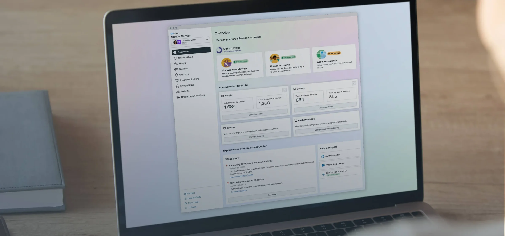
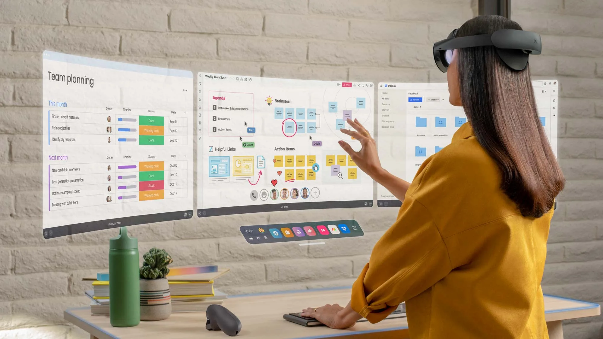

Formerly Quest for Business
An IT admin tool for managing an organization’s fleet of Meta Quest headsets at scale.

As enterprise use cases for Meta Quest headsets began to expand, organizations such as Walmart, and even schools, needed a way for IT admins to control and preset their devices. I was the lead designer of this tool, called Device Manager, which sits within a larger tool called Admin Center (work.meta.com).
As enterprise use of Meta Quest headsets grew, from design reviews to office rollouts to medical training, every deployment needed an IT admin to set up, group, secure, and support the devices, with very few tools built for the job.
IT admins are not one user. A small business with a single admin and a global enterprise with separate security, procurement, and support teams need very different roles, permissions, and workflows. Admins also set guardrails, presets, and age restrictions that can be vital to the team they manage, so they needed the flexibility to customize for their own team and account for edge cases. Our job was to design one tool flexible enough to fit every type and size of organization, so admins are empowered to do their best work.

The Managed devices page is the home base for an IT admin. It lists every headset in the organization, and the entry point for looking at any one of them in depth.
Device presets let admins set things like apps, files, age restrictions, and more at the preset level. Build a preset once and assign it to a device group or a people group, and every device in it is managed at once, instead of configuring headsets one at a time.